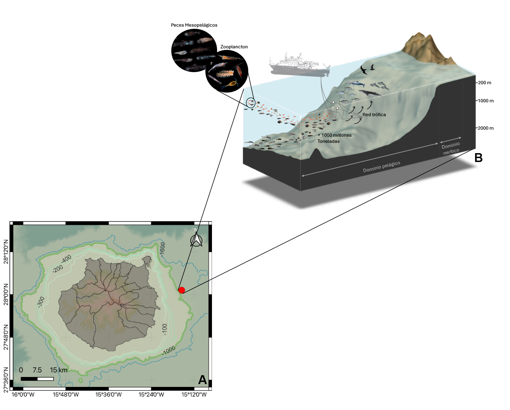
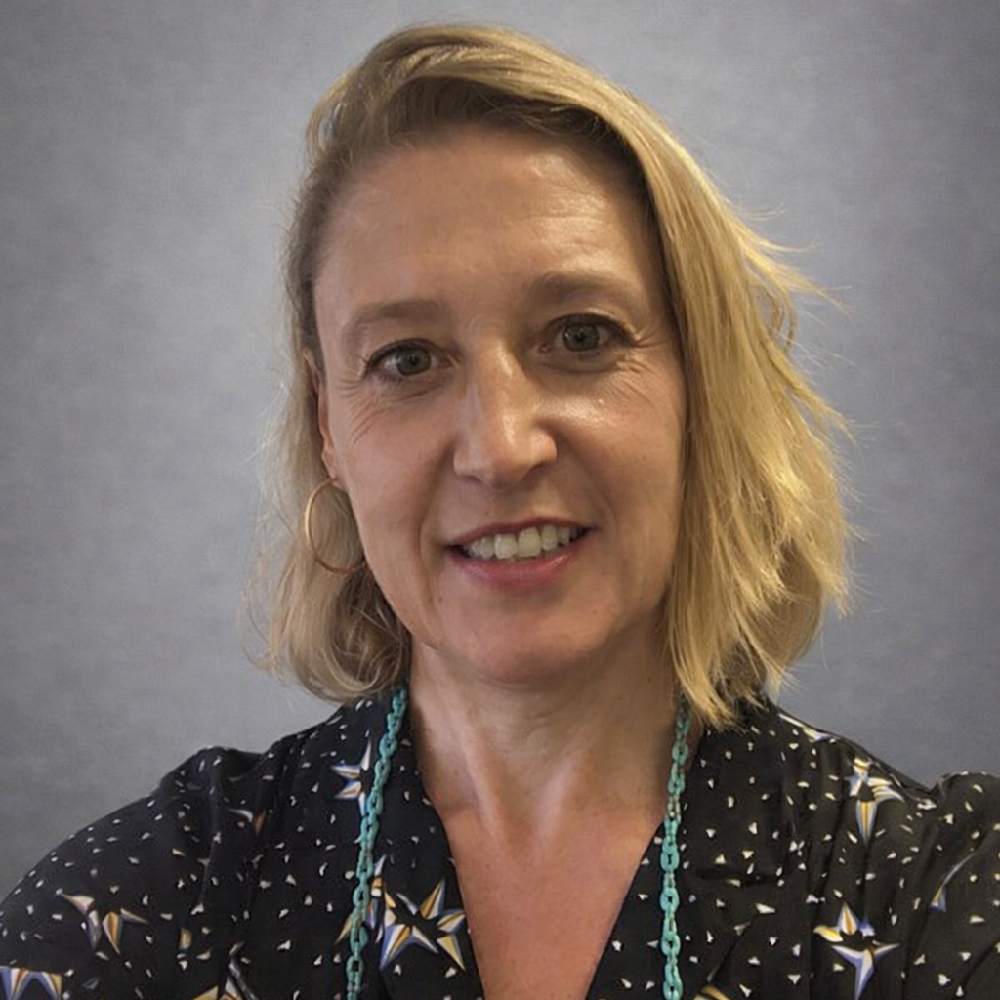
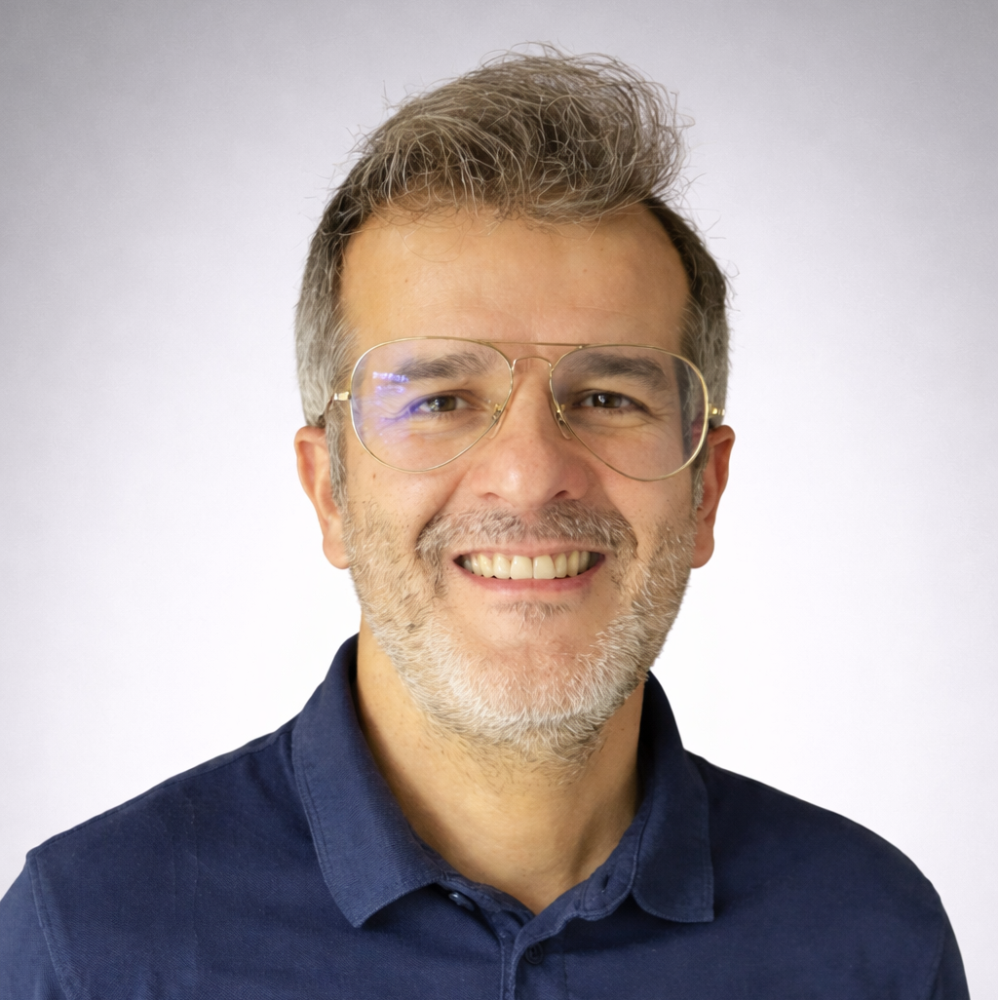
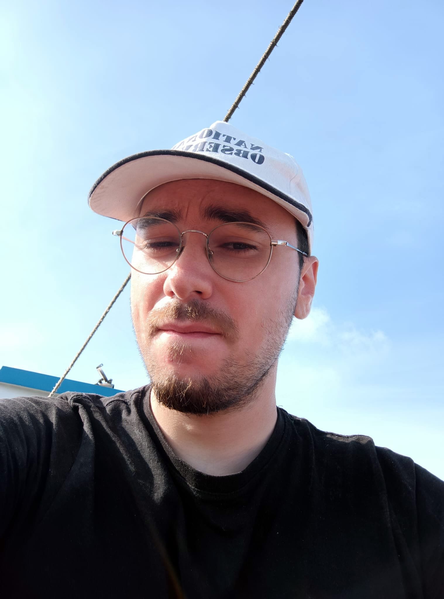
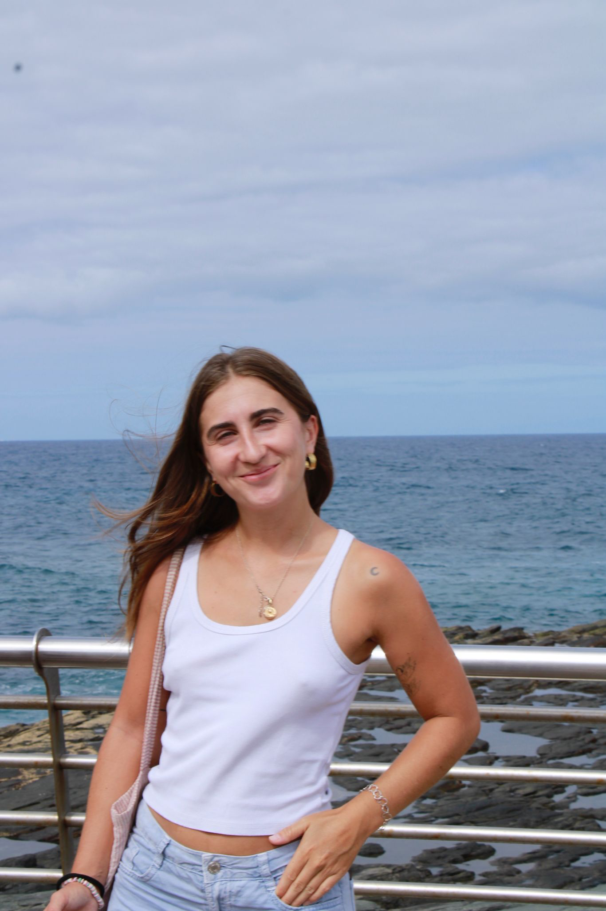
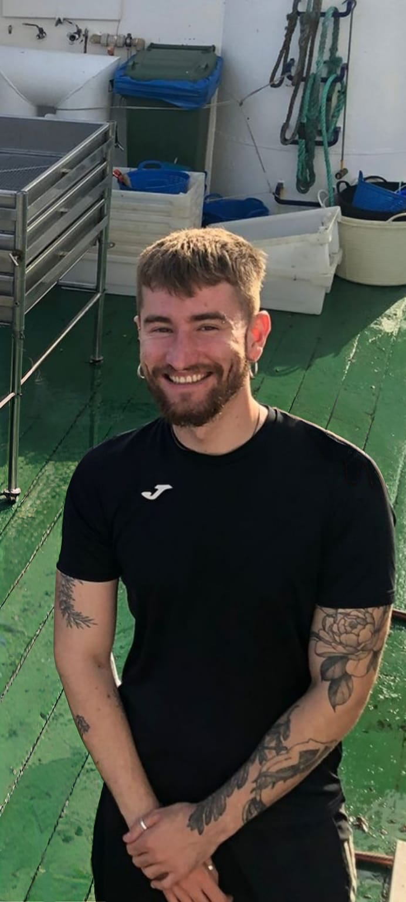
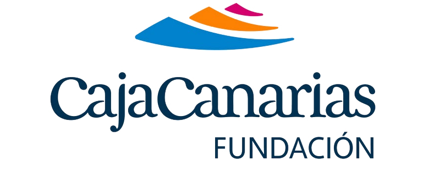
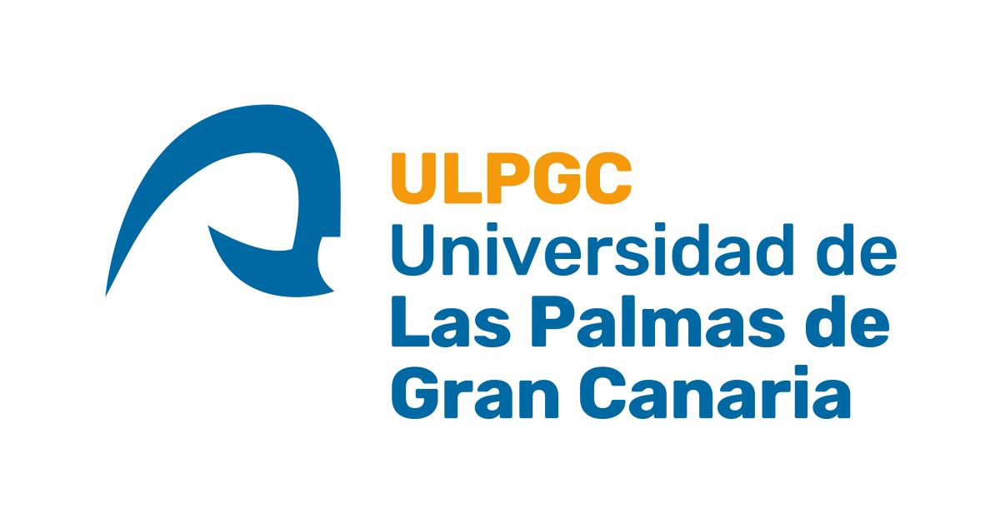
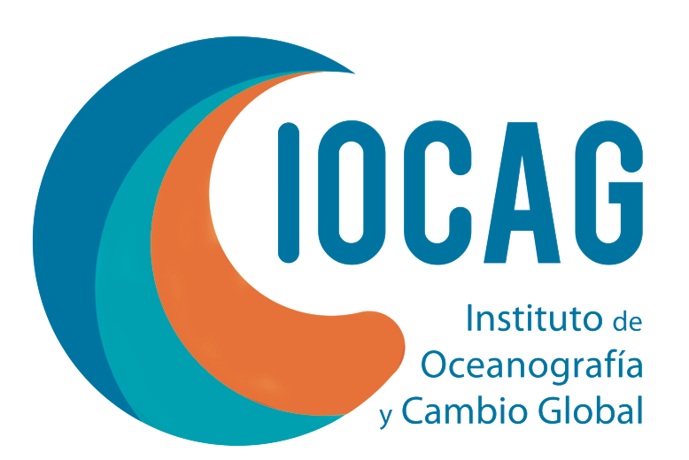
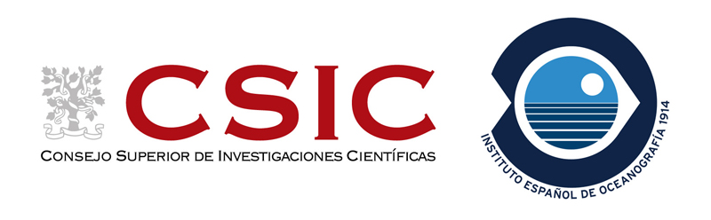

About the Project
The mesopelagic ecosystem (the zone extending between 200 and 1000 meters in depth) contains one of the largest concentrations of animal biomass on the planet, mostly composed of fish. These so-called “lantern” or mesopelagic fishes are considered the most abundant vertebrates in the biosphere, playing a fundamental role in marine food webs and in vertical transport processes of organic matter, facilitating carbon sequestration in the ocean depths. Thanks to their daily vertical migrations, they act as key intermediaries in the flow of energy and nutrients between ocean layers, while also accumulating contaminants such as microplastics and heavy metals, whose ecological and human health effects remain poorly understood. Their role in the ecosystem is as relevant as it is enigmatic, since despite their importance, mesopelagic fishes remain one of the least-known groups in the ocean.
Various studies have estimated that their global biomass could exceed 1,000 million tons, which has sparked growing international interest in their commercial exploitation as an alternative source of marine protein, fishmeal, oils for aquaculture, or dietary supplements. This emerging pressure highlights the urgent need for comprehensive scientific understanding of their ecological functions, vulnerability to fishing, and regenerative potential. In this context, the MESOFISH project was launched, proposing a multidisciplinary, long-term evaluation of the functional ecology of mesopelagic fishes in the northeastern Atlantic, with a particular focus on the Canary Islands.
Unlike previous studies, which were spatially or temporally limited, MESOFISH adopts a continuous and seasonal approach through monthly sampling campaigns over an entire year. This design will allow, for the first time in this region, capturing the seasonal variability of key ecological and physiological processes in response to factors such as temperature, primary productivity, and ocean current dynamics. One of the pillars of the project is understanding how climate change and anthropogenic pollution—two of the greatest environmental challenges of our era—affect these organisms, which are considered vectors of the biological carbon pump, as they are capable of transporting carbon to the deep ocean through their daily migrations and metabolic processes. Therefore, studying their physiology, ecology, and resilience has direct implications for climate change mitigation and the sustainability of deep-sea ecosystems.
The main objectives of MESOFISH are:
1. Characterize the functional ecology of representative species through integrated analysis of stomach contents, stable isotopes (δ¹³C and δ¹⁵N), fatty acids, and life cycle parameters (growth, longevity, reproduction, and metabolism). This characterization will allow understanding of their trophic position, ecological plasticity, and physiological adaptations throughout the year.
2. Assess the bioaccumulation of emerging contaminants, particularly microplastics, through gastrointestinal content analysis. Since mesopelagic fishes are an essential part of the marine food web, their exposure to these contaminants could have wide-ranging consequences for ecosystem health and commercially important predator species.
3. Estimate energy demand and metabolic activity of the species through measurements of the electron transport system (ETS), which will allow estimate of respiration rates and their effective contribution to the carbon flux toward the deep ocean.

Additionally, MESOFISH incorporates a crucial axis centered on life cycle studies, essential for understanding the vulnerability of these species to climate change and emerging overfishing. Knowledge of growth rates, reproductive strategies, or longevity is fundamental for modeling population dynamics and predicting their capacity to respond to environmental stress scenarios. This information is indispensable as a scientific basis for future conservation policies or for a potential responsible fishery exploitation, in line with sustainability principles.
The project builds on a solid knowledge base generated by previous initiatives such as the national projects MAFIA, BATHYPELAGIC, or DESAFIO, and in collaboration with European programs like MEESO, SUMMER, or TRIATLAS, with which it shares scientific synergies. However, MESOFISH differs by incorporating a systematic seasonal dimension, absent in most previous studies. This temporal perspective is essential for capturing the real dynamics of biological, chemical, and ecological processes in these deep ecosystems.
The Canary Archipelago offers optimal conditions for the development of this study, not only due to its strategic position in a transition zone between subtropical and temperate waters, but also because of its abrupt oceanic topography, high biodiversity, and strong tradition in research and fishing activity. In particular, the marine shelf of Gran Canaria provides an ideal setting for systematic sampling with adequate logistical access and oceanographic stability throughout the year.
Through the integration of tools from trophic ecology, physiology, biogeochemistry, and ecotoxicology, MESOFISH proposes a holistic and innovative approach to advancing knowledge of mesopelagic ecosystems. Its results will not only improve understanding of the role these fishes play in maintaining global ocean balance, but also assess their vulnerability to global threats such as ocean warming, acidification, pollution, and human exploitation.
In summary, MESOFISH represents a pioneering contribution to the study of one of the most important, yet least-known, components of the Earth’s climate system. The data obtained will serve as a key reference for designing adaptation and conservation strategies in the context of a Climate Emergency, and for evaluating, with solid scientific criteria, the true potential and risks associated with incorporating mesopelagic biomass into future blue economy models.
Our Mission
The work plan is structured into the following six work packages (WPs), each comprising specific tasks, responsible personnel, and expected milestones:
WP1: SAMPLE COLLECTION AND INITIAL PROCESSING
Objective: Obtain a representative set of mesopelagic fish throughout an entire annual cycle.
- Task 1.1: Identification and location of schools using video cameras (MOPS).
Responsible: Dr. Antonio Carlos Domínguez Brito
Milestone: Validation of the MOPS system for accurate school detection. - Task 1.2: Monthly sample collection via oceanographic cruises.
Responsible: Dr. Santiago Hernández León, Dr. Airam N. Sarmiento Lezcano, MESOFISH hire, ULPGC researchers
Milestone: Completion of 12 cruises with recorded and preserved samples. - Task 1.3: Taxonomic identification and biometrics of each individual, and preservation for further analyses.
Responsible: Dr. Airam N. Sarmiento Lezcano, MESOFISH hire
Milestone: Database with biological metadata and classified samples.
WP2: TROPHIC ANALYSIS
Objective: Determine diet, trophic level, and carbon/nitrogen sources of the species.
- Task 2.1: Stomach content analysis.
Responsible: Dr. Airam N. Sarmiento Lezcano
Milestone: Table of prey frequencies by species and size. - Task 2.2: Analysis of stable isotopes (δ¹³C and δ¹⁵N) and fatty acids.
Responsible: Dr. Airam N. Sarmiento Lezcano
Milestone: Estimation of trophic position and niche.
WP3: LIFE HISTORY TRAITS
Objective: Describe growth and reproduction.
- Task 3.1: Otolith reading to estimate growth rates.
Responsible: Dr. Airam N. Sarmiento Lezcano and MESOFISH hire
Milestone: Growth rates and length-age curves by species. - Task 3.2: Reproduction assessment: determination of gonadal maturity, GSI, fecundity.
Responsible: Dr. María José Caballero Cansino
Milestone: Reproductive parameters by species.
WP4: CONTAMINATION
Objective: Assess the presence of contaminants.
- Task 4.1: Quantification of microplastics in stomachs.
Responsible: Dr. Airam N. Sarmiento Lezcano
Milestone: Concentrations by species and tissue.
WP5: METABOLISM STUDY
Objective: Evaluate the metabolic activity of species through ETS assays.
- Task 5.1: Analysis of electron transport system (ETS) activity in muscle tissues.
Responsible: Dr. Santiago Hernández León and MESOFISH hire
Milestone: Standardized respiration rate by biomass and temperature.
WP6: RESULTS INTEGRATION AND DISSEMINATION
Objective: Synthesize generated information and disseminate results.
- Task 6.1: Integrated statistical analysis of all collected data.
Responsible: Dr. Santiago Hernández León and Dr. Airam N. Sarmiento Lezcano
Milestone: Results prepared for publication. - Task 6.2: Writing scientific articles, presenting at conferences, disseminating results through social media (Instagram, Facebook, LinkedIn), and writing thesis/final report.
Responsible: Dr. Santiago Hernández León, Dr. Airam N. Sarmiento Lezcano, Dr. María José Caballero Cansino, Dr. Antonio Domínguez Brito, and MESOFISH hire
Milestone: Submission of at least 4 manuscripts and participation in at least 1 conference.
Project Team

Dr. Airam N. Sarmiento Lezcano
Project Coordinator/Researcher
Affiliation: Instituto Español de Oceanografía (IEO-CSIC), Spain
Email: airam.sarmiento@ieo.csic.es
Dr. Santiago Hernández León
Principal Investigator
Affiliation: University of Las Palmas de Gran Canaria, Spain
Email: shernandezleon@ulpgc.es

Dr. María José Caballero Cansino
Co-director
Affiliation: University of Las Palmas de Gran Canaria, Spain
Email: mariajose.caballero@ulpgc.es

Dr. Antonio Domínguez Brito
Researcher
Affiliation: University of Las Palmas de Gran Canaria, Spain
Email: antonio.dominguez@ulpgc.es
Work Team
Dr. Laia Armengol
Work Team
Affiliation: Instituto Español de Oceanografía (IEO-CSIC), Spain
Email: laia.armengol@ieo.csic.es
Dr. Cristina López Pérez
Work Team
Affiliation: Instituto de Ciencias del Mar (ICM-CSIC), Spain
Email: clopez@icm.csic.es

MSc. Giorgio Leonardi
Work Team
Affiliation: University of Las Palmas de Gran Canaria, Spain
Email: giorgioleonardi66@gmail.com

MSc. Lorena Martínez Leiva
Work Team
Affiliation: University of Las Palmas de Gran Canaria, Spain

MSc. Nicolás Larrumbide Zúñiga
Work Team
Affiliation: University of A Coruña, Spain
Email: n.larrumbide@gmail.com

MSc. Javier Díaz Pérez
Work Team
Affiliation: University of Las Palmas de Gran Canaria, Spain
Email: javier.perez@ulpgc.es
In Situ Data
These figures show environmental data extracted from the Copernicus Marine Environment Monitoring Service. They provide an overview of physical and biological oceanographic conditions in the study area relevant to mesopelagic ecosystems.
Physical Oceanography

Sea Surface Temperature and surface currents

Sea Surface Temperature and geostrophic currents

Sea Surface Height and geostrophic circulation
Primary Productivity

Chlorophyll concentration and geostrophic currents
Water Column Structure

Vertical profiles of environmental variables at sampling locations
Mesopelagic Ecosystem

Estimated daily biomass of mesopelagic fishes

Temporal series of environmental and micronekton variables
What’s New
Stay up to date with the latest news from the MESOFISH project. Here we share recent findings, project milestones, field campaign highlights, and upcoming events. Follow our journey as we uncover the hidden life of mesopelagic fishes and advance ocean science in the Canary Islands.
At Sea
Discover the MESOFISH sampling area and learn about our field operations at sea. Explore maps of the eastern Canary Islands, sampling stations, and oceanographic conditions. This section highlights the work we do aboard research vessels, including fish collection, environmental measurements, and in situ monitoring of the mesopelagic ecosystem.
Publications & Data
Access scientific publications, datasets, and resources generated by the MESOFISH project. This section provides open-access data, including biological measurements, oceanographic parameters, and trophic ecology information. Our goal is to support research, foster collaboration, and advance knowledge of mesopelagic fishes and their ecological role in the deep sea.
Download dataset: biomass.csv



